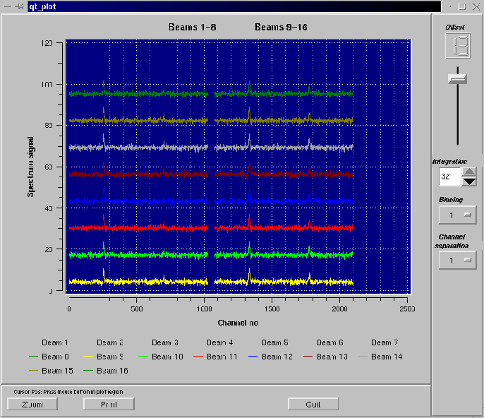

Figure 3:
ACSIS spectrum display showing pseudo spectra
from a 16 feed focal plane array being sent to the screen every
50 millisec. The various buttons / sliders etc shown on the display
are from the Qt widget set. The Qwt package is used to generate the actual
plot.